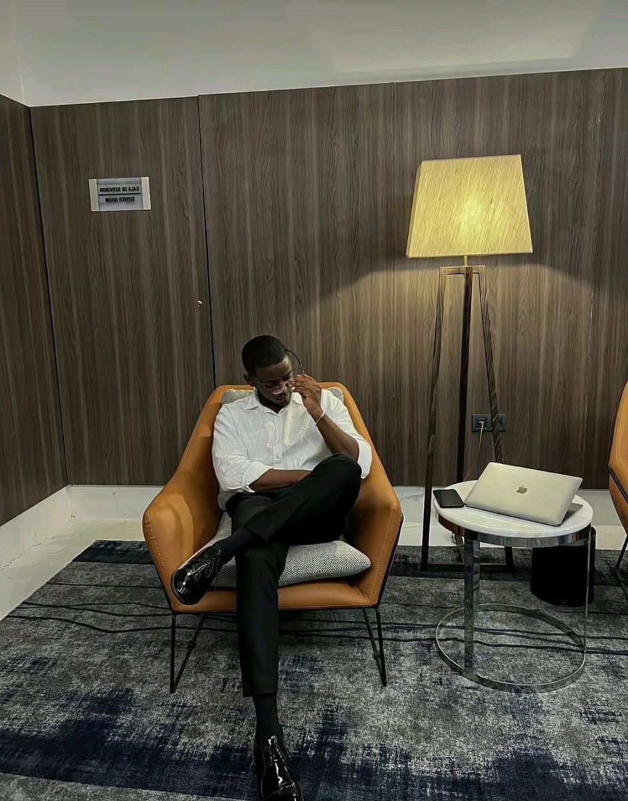

Notre leadership
Des dirigeants engagés dans l'excellence opérationnelle et l'innovation en sécurité

Omar Aw
Fondateur & PDG
15 ans d'expérience en cybersécurité offensive, ancien consultant chez Orange Cyberdefense. Certifications CISSP, OSCP, CEH.
CISSP
OSCP
Marie Fatou
Directrice Technique
Spécialiste en architecture sécurisée et forensic, ancienne de l'ANSSI. Certifications CISM, ISO 27001 Lead Auditor.
CISM
ISO 27001